/* lori-nix - proofs */
12 plates. Deterministic overlays rendered by the composition-analysis skill.
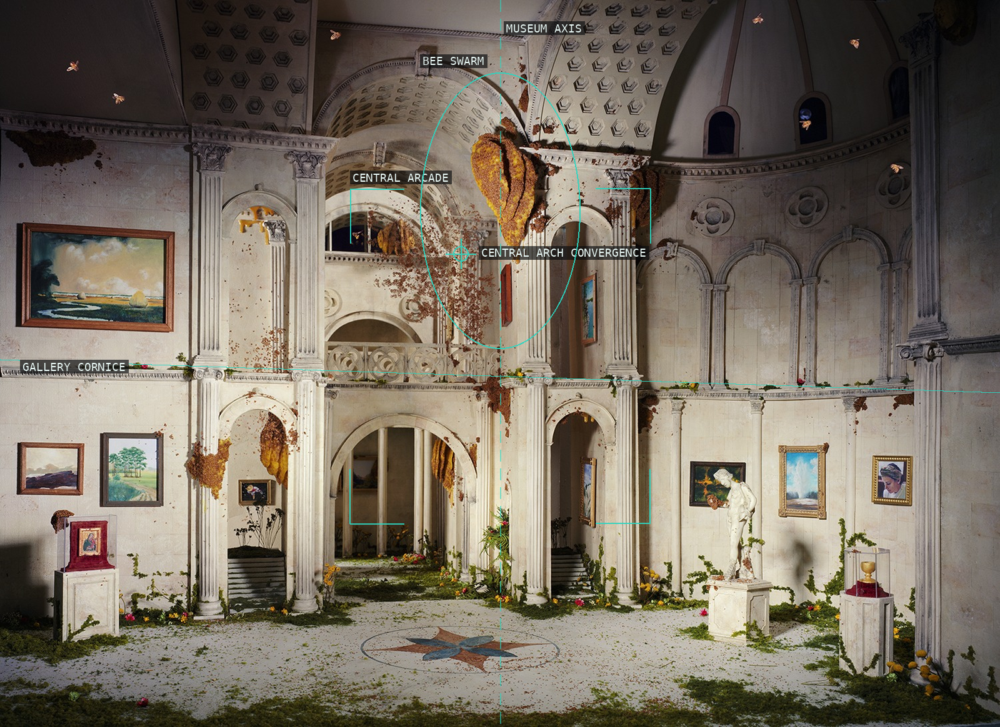
01-museum-of-art
A centered civic axis is broken open to weather and growth.
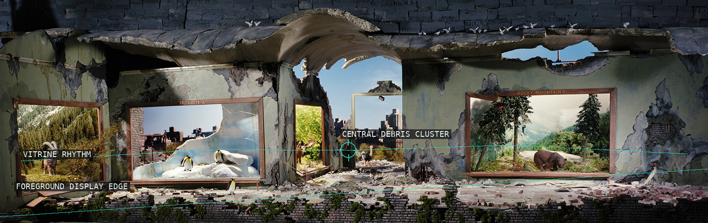
02-natural-history
The panorama reads as a laterally paced museum display rather than a single vanishing-point scene.
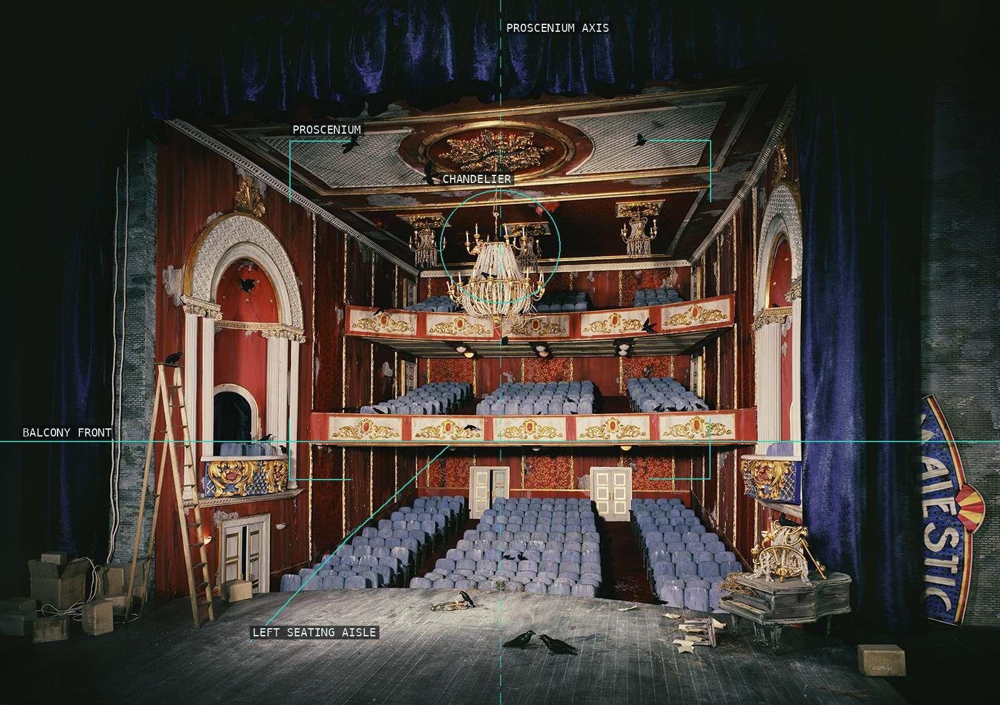
03-majestic
The cinema's axial viewing machine remains legible beneath a ruined ceiling.
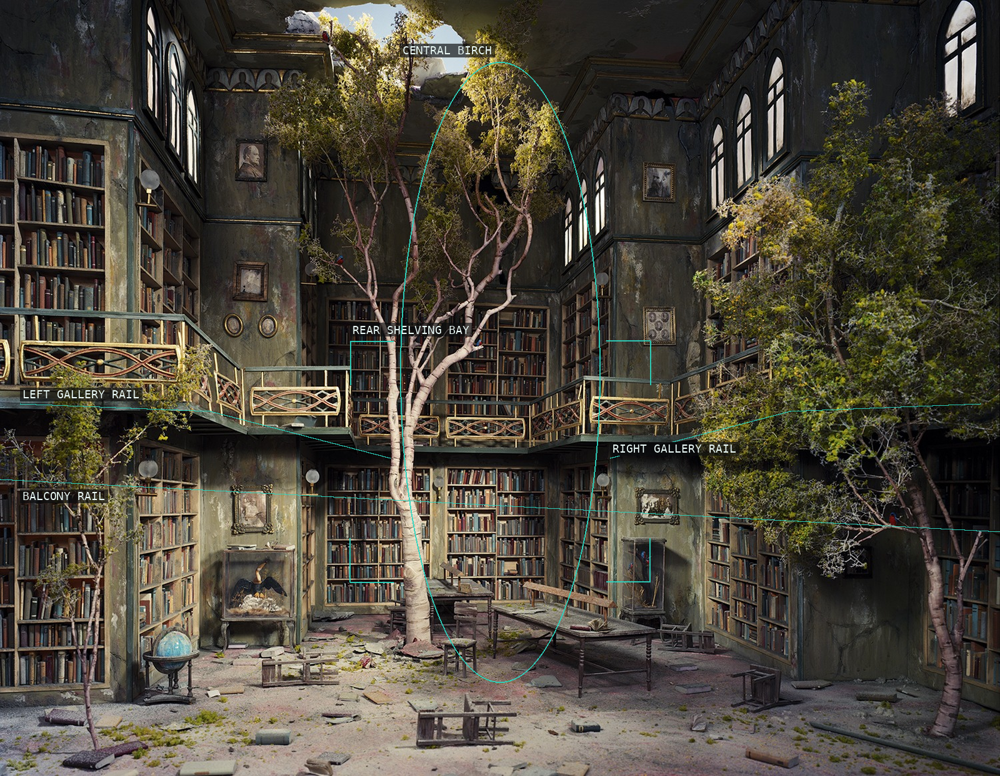
04-library
The library's ordered recession drives directly into an obstructing thicket.
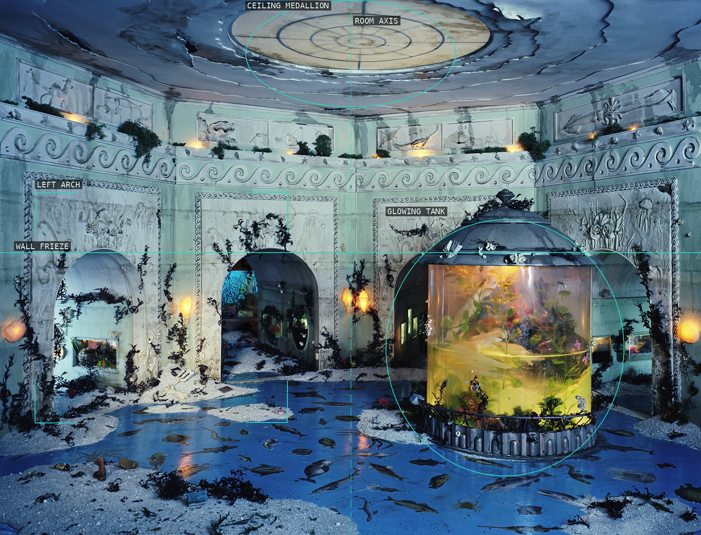
05-aquarium
A nearly centered room is overtaken by a horizontal field of water.
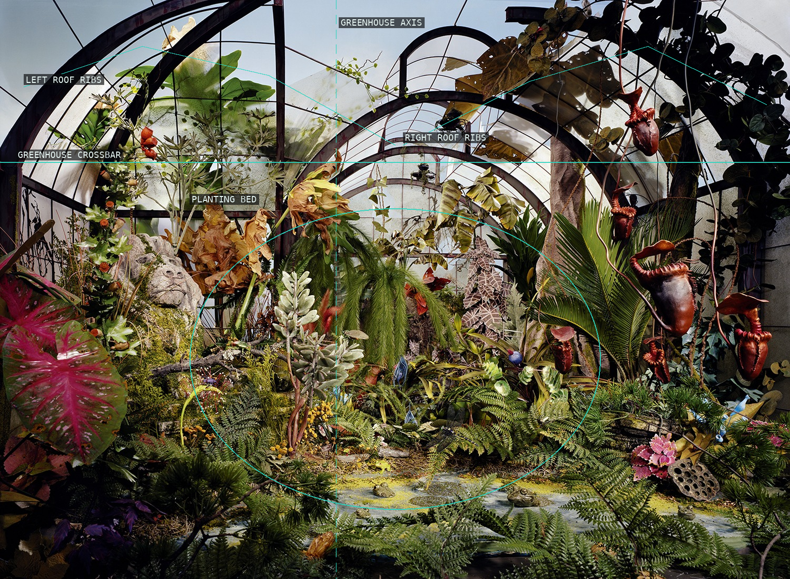
06-botanic-garden
The conservatory's precise glass geometry contains an unruly central mass.
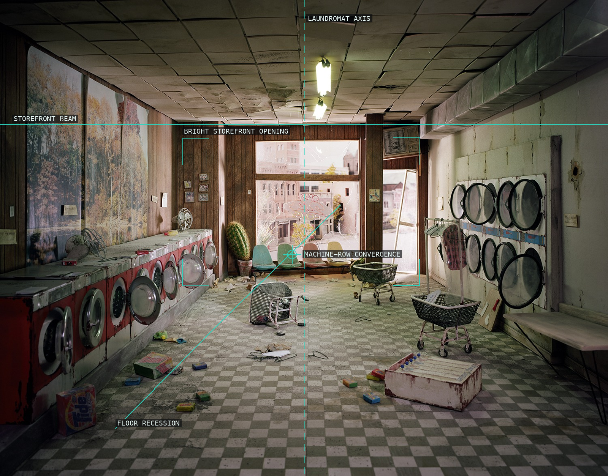
07-laundromat
A stable machine rhythm is undone by floodwater, plants, and a broken facade.
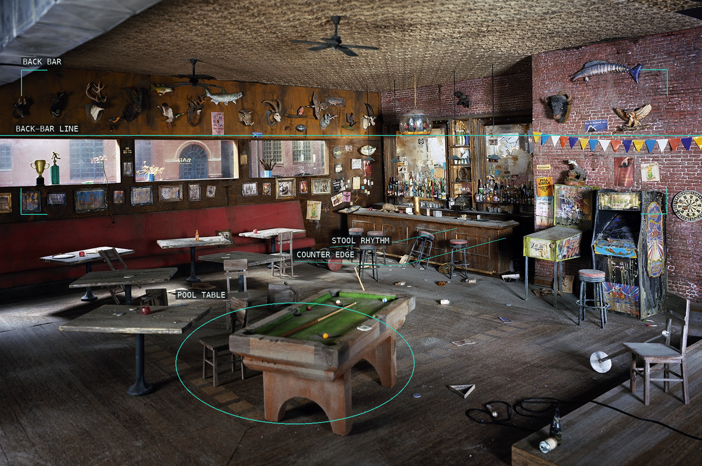
08-bar
A long counter turns an abandoned bar into a directional threshold.
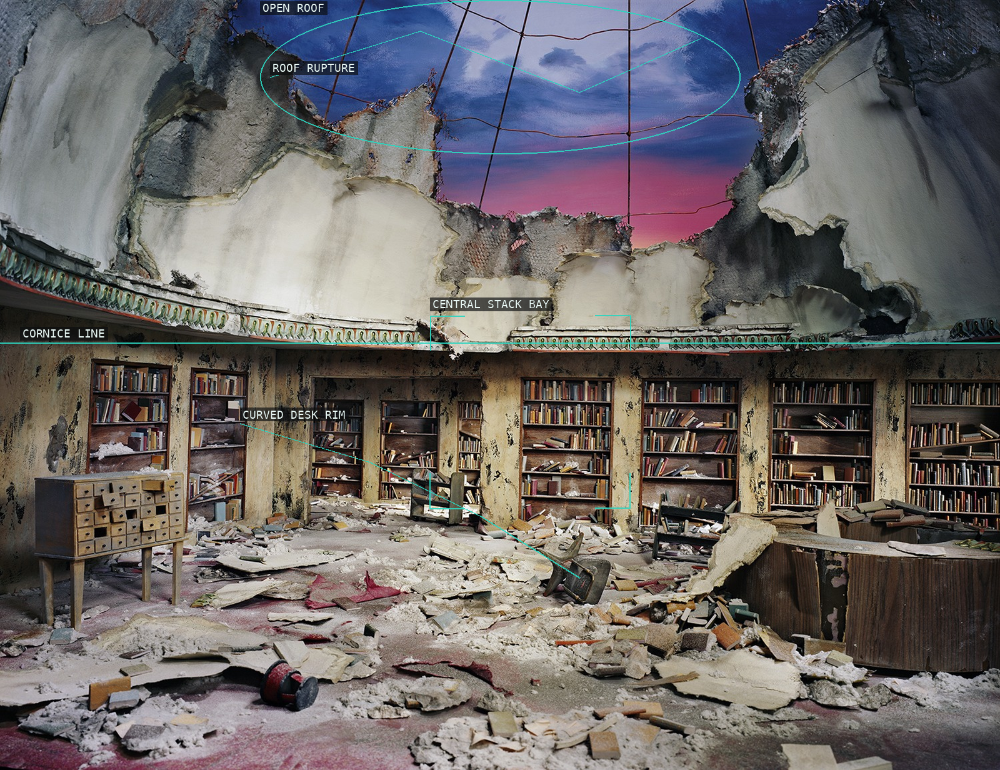
09-circulation-desk
The desk makes a broad foreground barrier before the evacuated library depth.
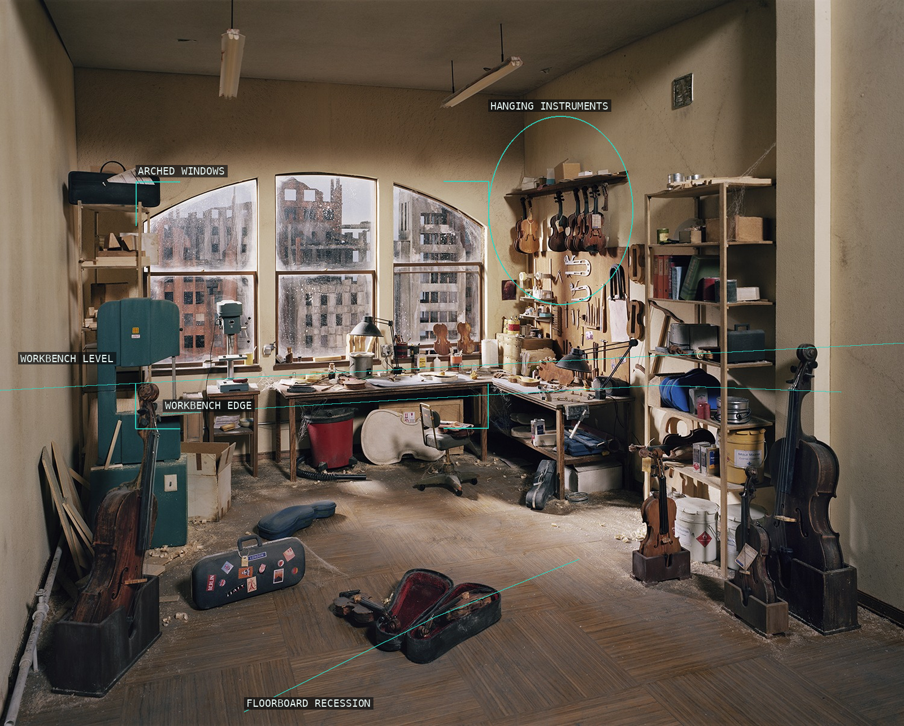
10-violin-repair-shop
Hanging instruments and work surfaces make a dense room of interlocking intervals.
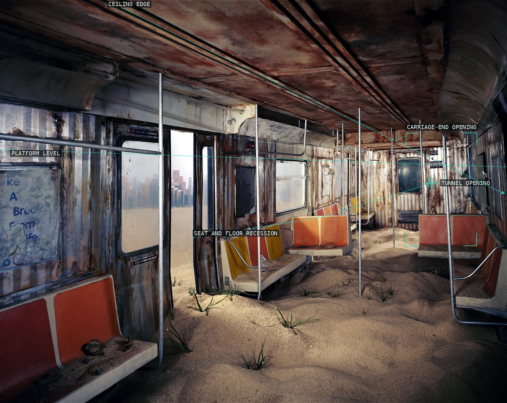
11-subway
Tracks and platform edges funnel the emptied station toward a distant opening.
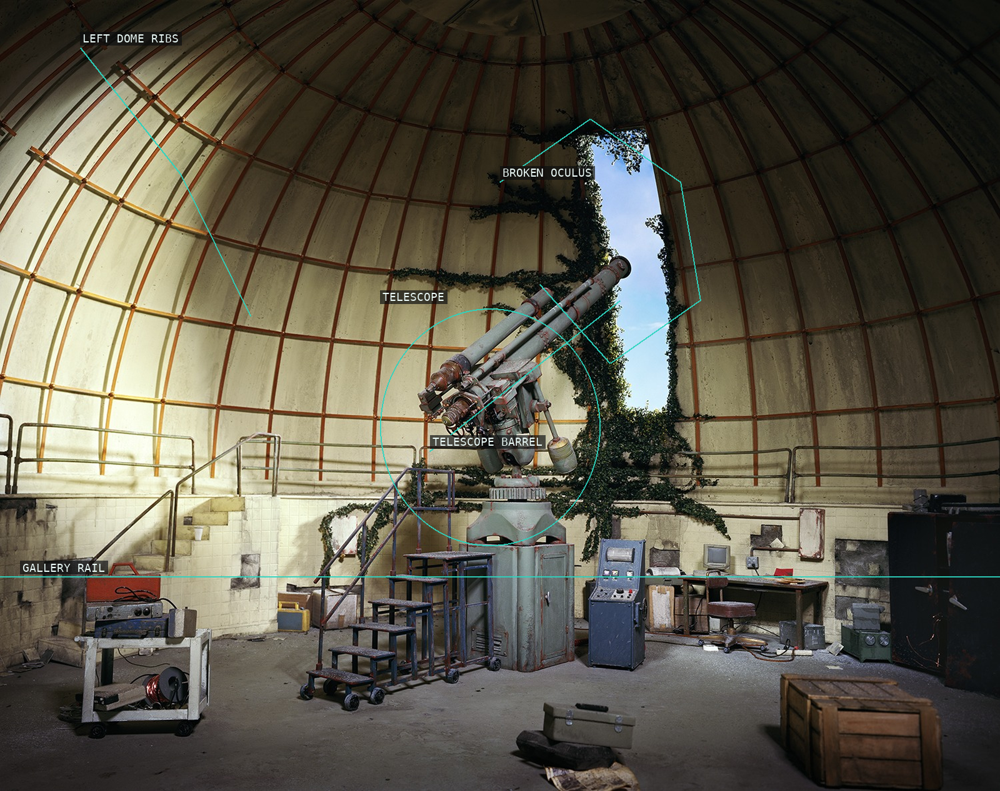
12-observatory
Nested circular architecture opens upward through a broken oculus.